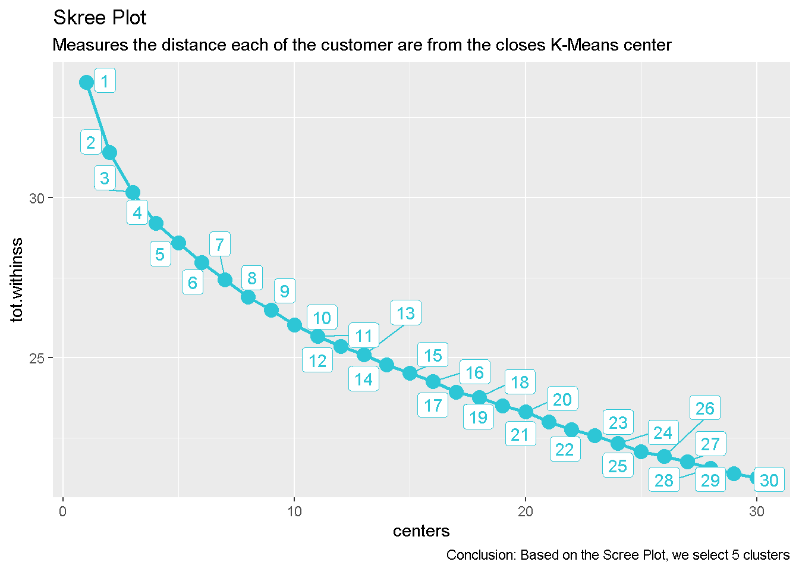
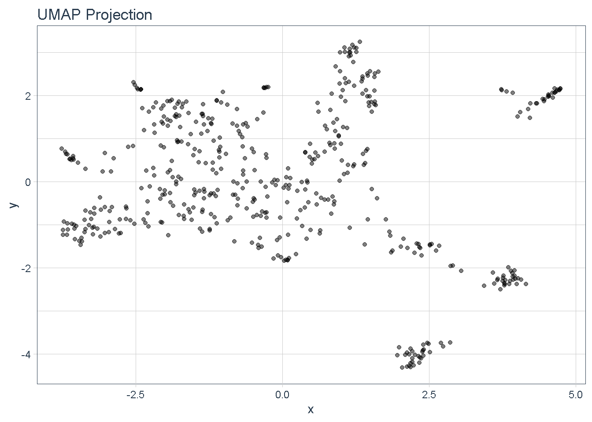
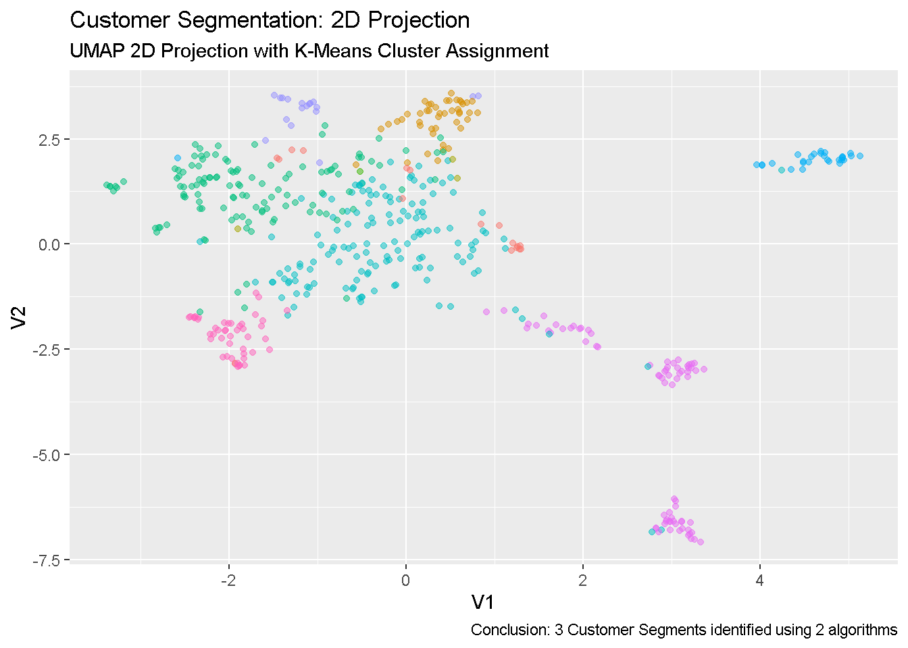

Your organization wants to know which companies are similar to each other to help in identifying potential customers of a SAAS software solution (e.g. Salesforce CRM or equivalent) in various segments of the market. The Sales Department is very interested in this analysis, which will help them more easily penetrate various market segments.
You will be using stock prices in this analysis. You come up with a method to classify companies based on how their stocks trade using their daily stock returns (percentage movement from one day to the next). This analysis will help your organization determine which companies are related to each other (competitors and have similar attributes).
You can analyze the stock prices using what you’ve learned in the unsupervised learning tools including K-Means and UMAP. You will use a combination of kmeans() to find groups and umap() to visualize similarity of daily stock returns.
Apply your knowledge on K-Means and UMAP along with dplyr, ggplot2, and purrr to create a visualization that identifies subgroups in the S&P 500 Index. You will specifically apply:
kmeans() and umap()purrrdplyr, tidyr, and tibbleggplot2 (bonus plotly)Load the following libraries.
We will be using stock prices in this analysis. Although some of you know already how to use an API to retrieve stock prices I obtained the stock prices for every stock in the S&P 500 index for you already. The files are saved in the session_6_data directory.
We can read in the stock prices. The data is 1.2M observations. The most important columns for our analysis are:
symbol: The stock ticker symbol that corresponds to a company’s stock pricedate: The timestamp relating the symbol to the share price at that point in timeadjusted: The stock price, adjusted for any splits and dividends (we use this when analyzing stock data over long periods of time)# STOCK PRICES
sp_500_prices_tbl <- read_rds("raw_data/sp_500_prices_tbl.rds")
glimpse(sp_500_prices_tbl)## Rows: 1,225,765
## Columns: 8
## $ symbol <chr> "MSFT", "MSFT", "MSFT", "MSFT", "MSFT", "MSFT", "MSFT", "MSFT~
## $ date <date> 2009-01-02, 2009-01-05, 2009-01-06, 2009-01-07, 2009-01-08, ~
## $ open <dbl> 19.53, 20.20, 20.75, 20.19, 19.63, 20.17, 19.71, 19.52, 19.53~
## $ high <dbl> 20.40, 20.67, 21.00, 20.29, 20.19, 20.30, 19.79, 19.99, 19.68~
## $ low <dbl> 19.37, 20.06, 20.61, 19.48, 19.55, 19.41, 19.30, 19.52, 19.01~
## $ close <dbl> 20.33, 20.52, 20.76, 19.51, 20.12, 19.52, 19.47, 19.82, 19.09~
## $ volume <dbl> 50084000, 61475200, 58083400, 72709900, 70255400, 49815300, 5~
## $ adjusted <dbl> 15.86624, 16.01451, 16.20183, 15.22628, 15.70234, 15.23408, 1~The second data frame contains information about the stocks the most important of which are:
company: The company namesector: The sector that the company belongs to# SECTOR INFORMATION
sp_500_index_tbl <- read_rds("raw_data/sp_500_index_tbl.rds")
glimpse(sp_500_index_tbl)## Rows: 506
## Columns: 5
## $ symbol <chr> "MSFT", "AAPL", "AMZN", "BRK.B", "FB", "JNJ", "JPM", "GOOG~
## $ company <chr> "Microsoft Corporation", "Apple Inc.", "Amazon.com Inc.", ~
## $ weight <dbl> 0.035896594, 0.032998436, 0.028348455, 0.017144931, 0.0167~
## $ sector <chr> "Information Technology", "Information Technology", "Consu~
## $ shares_held <dbl> 84853600, 49533308, 4510051, 21364490, 26385216, 29452358,~Which stock prices behave similarly?
Answering this question helps us understand which companies are related, and we can use clustering to help us answer it!
Even if you’re not interested in finance, this is still a great analysis because it will tell you which companies are competitors and which are likely in the same space (often called sectors) and can be categorized together. Bottom line - This analysis can help you better understand the dynamics of the market and competition, which is useful for all types of analyses from finance to sales to marketing.
Let’s get started.
What you first need to do is get the data in a format that can be converted to a “user-item” style matrix. The challenge here is to connect the dots between what we have and what we need to do to format it properly.
We know that in order to compare the data, it needs to be standardized or normalized. Why? Because we cannot compare values (stock prices) that are of completely different magnitudes. In order to standardize, we will convert from adjusted stock price (dollar value) to daily returns (percent change from previous day). Here is the formula.
\[ return_{daily} = \frac{price_{i}-price_{i-1}}{price_{i-1}} \]
First, what do we have? We have stock prices for every stock in the SP 500 Index, which is the daily stock prices for over 500 stocks. The data set is over 1.2M observations.
## Rows: 1,225,765
## Columns: 8
## $ symbol <chr> "MSFT", "MSFT", "MSFT", "MSFT", "MSFT", "MSFT", "MSFT", "MSFT~
## $ date <date> 2009-01-02, 2009-01-05, 2009-01-06, 2009-01-07, 2009-01-08, ~
## $ open <dbl> 19.53, 20.20, 20.75, 20.19, 19.63, 20.17, 19.71, 19.52, 19.53~
## $ high <dbl> 20.40, 20.67, 21.00, 20.29, 20.19, 20.30, 19.79, 19.99, 19.68~
## $ low <dbl> 19.37, 20.06, 20.61, 19.48, 19.55, 19.41, 19.30, 19.52, 19.01~
## $ close <dbl> 20.33, 20.52, 20.76, 19.51, 20.12, 19.52, 19.47, 19.82, 19.09~
## $ volume <dbl> 50084000, 61475200, 58083400, 72709900, 70255400, 49815300, 5~
## $ adjusted <dbl> 15.86624, 16.01451, 16.20183, 15.22628, 15.70234, 15.23408, 1~Your first task is to convert to a tibble named sp_500_daily_returns_tbl by performing the following operations:
symbol, date and adjusted columnsNA values from the lagging operationpct_return.symbol, date, and pct_return columnssp_500_daily_returns_tbl# Apply your data transformation skills!
sp_500_daily_returns_tbl1 <- sp_500_prices_tbl %>%
select(symbol, date, adjusted) %>%
filter(date > "2018-01-01") %>%
group_by(symbol) %>%
mutate(ladj =lag(adjusted,1)) %>%
drop_na(ladj) %>%
mutate(pct_return = (adjusted-ladj)/ladj)
glimpse(sp_500_daily_returns_tbl1)## Rows: 141,340
## Columns: 5
## Groups: symbol [502]
## $ symbol <chr> "MSFT", "MSFT", "MSFT", "MSFT", "MSFT", "MSFT", "MSFT", "MS~
## $ date <date> 2018-01-03, 2018-01-04, 2018-01-05, 2018-01-08, 2018-01-09~
## $ adjusted <dbl> 84.88061, 85.62768, 86.68930, 86.77776, 86.71879, 86.32559,~
## $ ladj <dbl> 84.48741, 84.88061, 85.62768, 86.68930, 86.77776, 86.71879,~
## $ pct_return <dbl> 0.0046539123, 0.0088014214, 0.0123981290, 0.0010204489, -0.~The next step is to convert to a user-item format with the symbol in the first column and every other column the value of the daily returns (pct_return) for every stock at each date.
We’re going to import the correct results first (just in case you were not able to complete the last step).
sp_500_daily_returns_tbl <- read_rds("raw_data/sp_500_daily_returns_tbl.rds")
glimpse(sp_500_daily_returns_tbl)## Rows: 141,340
## Columns: 3
## $ symbol <chr> "MSFT", "MSFT", "MSFT", "MSFT", "MSFT", "MSFT", "MSFT", "MS~
## $ date <date> 2018-01-03, 2018-01-04, 2018-01-05, 2018-01-08, 2018-01-09~
## $ pct_return <dbl> 0.0046539123, 0.0088014214, 0.0123981290, 0.0010204489, -0.~Now that we have the daily returns (percentage change from one day to the next), we can convert to a user-item format. The user in this case is the symbol (company), and the item in this case is the pct_return at each date.
date column to get the values as percentage returns. Make sure to fill an NA values with zeros.stock_date_matrix_tblNext, we’ll perform K-Means clustering.
We’re going to import the correct results first (just in case you were not able to complete the last step).
Beginning with the stock_date_matrix_tbl, perform the following operations:
symbolkmeans() with centers = 4 and nstart = 20kmeans_obj# Create kmeans_obj for 4 centers
kmeans_obj <- stock_date_matrix_tbl %>%
select(-symbol) %>%
kmeans(centers = 4, nstart = 20)Use glance() to get the tot.withinss.
# Apply glance() to get the tot.withinss
#broom::tidy(kmeans_obj) %>% glimpse()
broom::glance(kmeans_obj)Now that we are familiar with the process for calculating kmeans(), let’s use purrr to iterate over many values of “k” using the centers argument.
We’ll use this custom function called kmeans_mapper():
kmeans_mapper <- function(center = 3) {
stock_date_matrix_tbl %>%
select(-symbol) %>%
kmeans(centers = center, nstart = 20)
}Apply the kmeans_mapper() and glance() functions iteratively using purrr.
centers that go from 1 to 30k_means with the kmeans_mapper() output. Use mutate() to add the column and map() to map centers to the kmeans_mapper() function.glance with the glance() output. Use mutate() and map() again to iterate over the column of k_means.k_means_mapped_tbl# Use purrr to map
kmeans_mapped_tbl <- tibble(centers = 1:30) %>%
mutate(k_means = centers %>% map(kmeans_mapper)) %>%
mutate(glance = k_means %>% map(glance))
# Output: k_means_mapped_tbl Next, let’s visualize the “tot.withinss” from the glance output as a Scree Plot.
k_means_mapped_tblglance columncenters column (x-axis) versus the tot.withinss column (y-axis) using geom_point() and geom_line()# Visualize Scree Plot
kmeans_mapped_tbl %>%
unnest(glance) %>%
select(centers, tot.withinss) %>%
# Visualization
ggplot(aes(centers, tot.withinss)) +
geom_point(color = "#2DC6D6", size = 4) +
geom_line(color = "#2DC6D6", size = 1) +
# Add labels (which are repelled a little)
ggrepel::geom_label_repel(aes(label = centers), color = "#2DC6D6") +
# Formatting
labs(title = "Skree Plot",
subtitle = "Measures the distance each of the customer are from the closes K-Means center",
caption = "Conclusion: Based on the Scree Plot, we select 5 clusters")
We can see that the Scree Plot becomes linear (constant rate of change) between 5 and 10 centers for K.
Next, let’s plot the UMAP 2D visualization to help us investigate cluster assignments.
We’re going to import the correct results first (just in case you were not able to complete the last step).
First, let’s apply the umap() function to the stock_date_matrix_tbl, which contains our user-item matrix in tibble format.
stock_date_matrix_tblsymbol columnumap() function storing the output as umap_results# Apply UMAP
umap_results <- stock_date_matrix_tbl %>%
select(-symbol) %>%
umap()
# Store results as: umap_results Next, we want to combine the layout from the umap_results with the symbol column from the stock_date_matrix_tbl.
umap_results$layoutmatrix data type to a tibble with as_tibble()symbol column from the stock_date_matrix_tbl.umap_results_tbl.# Convert umap results to tibble with symbols
umap_results_tbl <- umap_results$layout %>%
as_tibble(.name_repair = "unique") %>% # argument is required to set names in the next step
set_names(c("x", "y")) %>%
bind_cols(
stock_date_matrix_tbl %>% select(symbol)
)
# Output: umap_results_tblFinally, let’s make a quick visualization of the umap_results_tbl.
umap_results_tbl into ggplot() mapping the columns to x-axis and y-axisgeom_point() geometry with an alpha = 0.5theme_tq() and add a title “UMAP Projection”# Visualize UMAP results
umap_results_tbl %>%
ggplot(aes(x,y)) +
geom_point(alpha = 0.5) +
#geom_label_repel(aes(label = symbol), size = 3) +
labs(title = "UMAP Projection") +
theme_tq()
We can now see that we have some clusters. However, we still need to combine the K-Means clusters and the UMAP 2D representation.
Next, we combine the K-Means clusters and the UMAP 2D representation
We’re going to import the correct results first (just in case you were not able to complete the last step).
k_means_mapped_tbl <- read_rds("raw_data/k_means_mapped_tbl.rds")
umap_results_tbl <- read_rds("raw_data/umap_results_tbl.rds")First, pull out the K-Means for 10 Centers. Use this since beyond this value the Scree Plot flattens. Have a look at the business case to recall how that works.
# Get the k_means_obj from the 10th center
k_means_obj <- kmeans_mapped_tbl %>%
pull(k_means) %>%
pluck(10)
# Store as k_means_objNext, we’ll combine the clusters from the k_means_obj with the umap_results_tbl.
k_means_objk_means_obj with the stock_date_matrix_tbl to get the clusters added to the end of the tibblesymbol and .cluster columnsumap_results_tbl by the symbol columnsp_500_index_tbl %>% select(symbol, company, sector) by the symbol column.umap_kmeans_results_tbl# Use your dplyr & broom skills to combine the k_means_obj with the umap_results_tbl
# Convert it to a tibble with broom
kmeans_clusters_tbl <- k_means_obj %>%
augment(stock_date_matrix_tbl) %>%
# Select the data we need
select(symbol, .cluster)
# Bind data together
umap_kmeans_results_tbl <- umap_results_tbl %>%
left_join(kmeans_clusters_tbl) %>%
left_join(sp_500_index_tbl %>% select(symbol, company, sector))
# Output: umap_kmeans_results_tbl Plot the K-Means and UMAP results.
umap_kmeans_results_tblggplot() mapping V1, V2 and color = .clustergeom_point() geometry with alpha = 0.5scale_color_manual(values = palette_light() %>% rep(3)))# Visualize the combined K-Means and UMAP results
umap_kmeans_results_tbl %>%
mutate(label_text = str_glue("stock: {symbol}
Cluster: {.cluster}")) %>%
ggplot(aes(V1,V2, color = .cluster)) +
# Geometries
geom_point(alpha = 0.5) +
ggrepel::geom_label_repel(aes(label = label_text), size = 2, fill = "#282A36") +
# Formatting
#scale_color_manual(values = palette_light() %>% rep(4)) +
labs(title = "Customer Segmentation: 2D Projection",
subtitle = "UMAP 2D Projection with K-Means Cluster Assignment",
caption = "Conclusion: 3 Customer Segments identified using 2 algorithms") +
theme(legend.position = "none")